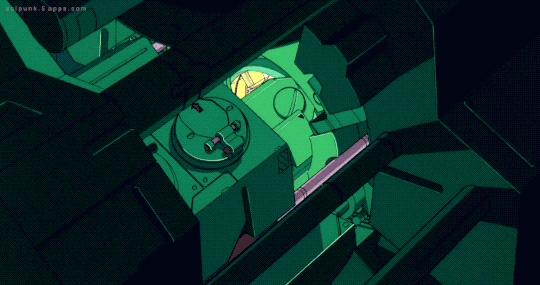

About:
This website was created for my Web Development class.
Here I discuss its creation, from Version 1 to Version 4.
Version 1:
- I added the pages I want so-far, however I might group them differently or together in the future to clear up the navigation bar.
- I implemented the basic css. I started with the colors, and then focused on indenting things like the quotes, and went from there.
Version 2:
- I re-implemented some of the V1 CSS elements on my about page, and re-implemented them more natuarally in my home-page.
- I fixed the formatting of my HTML and CSS. I got rid of empty line-breaks, and fixed indentation by changing my Editor's tab settings.
- When I was trying to implement my reset style sheet, so many parts of my website ended up becoming broken. I had to slowly increase one-by-one, which elements the reset rules applied to, to figure out what exactly was causing the breakages. Things like having my first-child of my nav indented by using padding-left, had to be changed to margin-left, to ensure that the elements were spaced out properly. Because I was originally using padding, the first two elements of the nav were stacked on top of each other. There were many things I had to change to get my code to "work" with the reset style sheet, but now that it works, I'm glad I've done it. I had lots of code that technically worked, but it was not the correct way to actually do the task properly. The reset style sheet exposed this bad code.
- Overall, I'm really proud of how this turned out, even though it took me a day past the due date. I like how the layout is narrowed, and how the windows have a "gapped" appearance which is similar to how my computer appearance is constructed. It give a feeling of space and openness, and stops you from feeling confined and trapped. Also, it looks really cool. However, I'm not sure if this is the best layout for mobile devices or small screens.
Version 3:
- In this version I added a flexbox layout on my tools page, as well as responsive design to my navigation bar, and added a responsive table on my academics page.
- For my desktop layout, my navigation bar has a full column layout with no drop-menu. For my table layout, my navigation bar is one column without a drop-menu. Finally, for my mobile layout, I have a one column navigation bar with a drop-menu for the miscellaneous submenu.
- For my table, I have styled it on the desktop layout. The mobile layout lacks distinct columns and rows, so I am not able to style it to the same depth as I can on the desktop layout.
- I had an incredibly hard time with the responsive design. I had to spend an inordinate time debugging why my code was not working as I thought it would. One of the big issues was that I was missing the "meta name="viewport" content="width=device-width, initial-scale=1" in my header. As a result, the responsive design elements would not pick up on the screen size changes.
- The flexbox also gave me a hard time. I initially wanted to order some images under my project site. However, images do not work the same as dividers with text. I tried a lot of different implemenentations, and could never get it to do exactly what I wanted. There was always unexplained behavior going on with how it was rendering. As a result, I ended up putting my flexbox design on my tools page, where it contains dividers with only text. Only then, did my flexbox work as expected.
Version 4:
- I really enjoyed using git for this version. It makes keeping track of changes alot simpler. I've had so many cases where I've made a change, and I completely broke many aspects of the site that were unrelated to the change. I would then have to completely start over, and fix five more problems, right after I solved one. Having the backups of older versions greatly helps in troubleshooting. I also like how I can see how my project progressed over time, by looking at the commit history. Lastly, I like the intention behing "committing" to the repository. It makes the process alot more meaningful and deliberate. It also forces me to more intentional with how I got about things, as I always have to have a commit message describing what I just changed or implemented.
- I didn't have too many issues with this version. Compared to the other versions, there is a lot less things to implement. Most of the tasks are straight-forward after having completed the tutorial and watching the lectures.
- Overall, I really enjoyed using git. It's something I never really understood until now, and only really understood it through using it for this project. I've always knew generally what it is and a command or two, but I was always confused by it, and shyed away from it. I feel alot more confident with git now, and have a decent understanding of the process and workflow.
